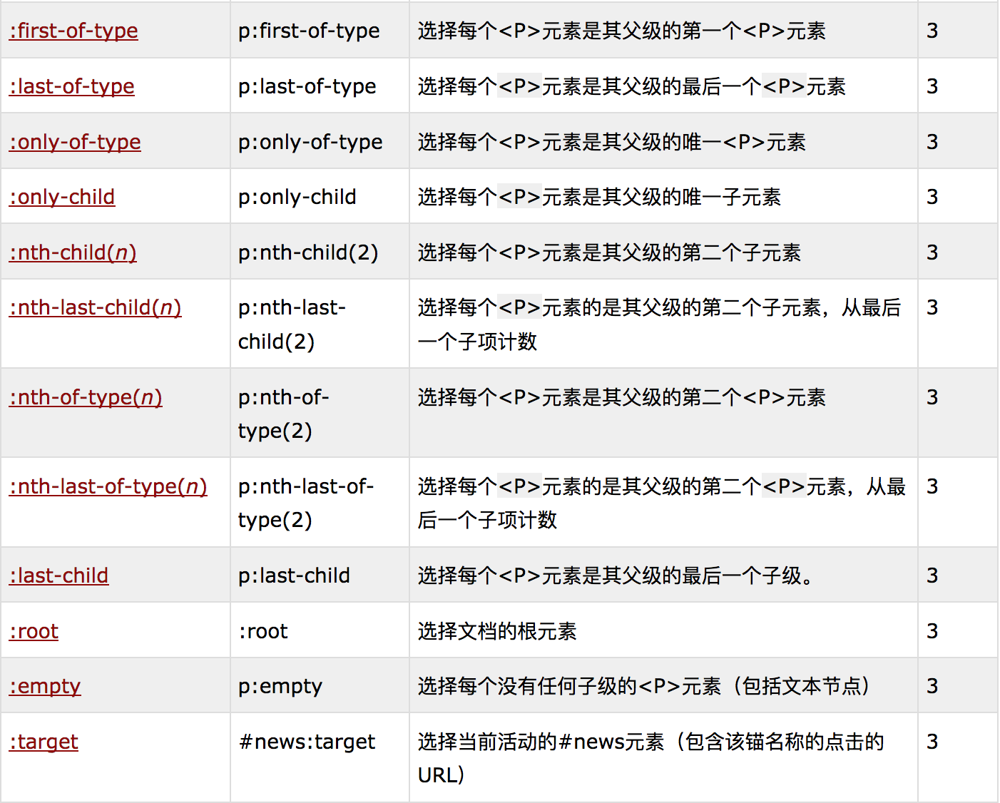
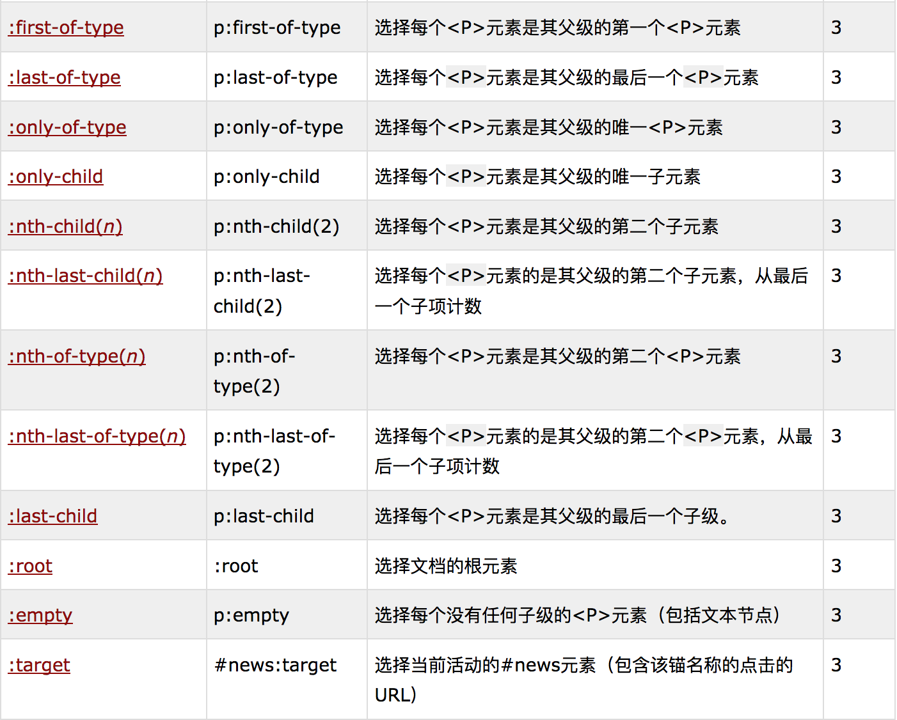

HTML与CSS
- HTML是一种结构化标记语言，用于描述文档的不同部分
- CSS样式表：将所有样式规则放到一张表中，易于修改
- 在多页上引用样式表：可以快速创建风格一致的网站；需要修改网页风格的时候只要对一个样式表进行修改
- 层叠：对冲突规则做了约定；由于层叠的特性，规则可以覆盖
- XML可扩展标记语言「Extensible Markup Language」
- 元素「element」
是文档结构的基础，每个元素生成一个盒子「box」其中包含元素的内容
替换元素「replaced element」：是指用来替换元素内容的部分并非由文档内容直接表示，例如：img元素、input元素等
非替换元素「nonreplaced element」：大多数HTML与XTHML都是非替换元素，其内容由用户代理（通常是浏览器）在元素本身生成的框中显示
块级元素「block-level」：块级元素生成一个元素框，默认会填充其父元素的内容区，旁边不能有其他元素，即默认分行，例如：div元素、p元素
行内元素「inline-level」：行内元素在文本行内生成元素框，而不会打断这行文本，例如：span元素、a元素、em元素
- link标记：链接样式表和文档
外部样式表「external style sheet」：HTML的外部样式表；为了成功加载样式表，link标签必须放在head元素中
属性：rel「relation」表示关系，关系为stylesheet；type属性的值为text/css，描述了使用link标记加载的数据的类型，确定浏览器如何处理其导入的数据；href属性，属性的值是样式表的URL，可以是绝对URL，也可以是相对URL
候选样式表「alternate style sheet」将rel属性的值设置为alternate stylesheet可以定义候选样式表，只有用户选择这个样式表时才会用于文档表现
- style元素
可以用style元素包含样式表：style一定要使用type属性；
文档样式表（document style sheet）或嵌套样式表（embedded style sheet）：可以包含多个应用到文档的样式表，可以使用
@import指令包含多个外部样式表链接
@import指令：@import url(sheet2.css);用于指示浏览器加载一个外部样式表；指令的位置必须出现在style容器中，指令出现在样式表的开头；一个文档中可以不只有一个@import语句，且每个@import指令的样式表都会加载并使用
用途：可以用于需要用到其他外部样式表中的样式表@import url(print.css); body{color:red;}
- CSS注释：单行注释、多行注释
- 内联样式（inline style）：利用HTML的style属性为单个元素指定一些样式
style属性的语法：把大括号换成双引号，与style容器中的声明相似；一个内联style属性中只能放一个声明块，而不能放整个样式表
CSS选择器
- 掌握CSS以何种方式选择文档中要应用样式的部分
- CSS的主要功能就是将某些规则应用于文档中同一类型的元素
- 规则的结构：每条规则「rule」有两个部分，选择器「selector」和声明块「declaration block」声明块有一个或多个声明「declaration」组成，每条声明是属性和值的组合
h1:{color:red;} 选择器：声明（属性：值）
规则的左边：选择器，定义了将影响文档中的哪些部分；
规则的右边：声明块，由一个或多个声明组成，每个声明是一个CSS属性和该属性值的结合
- 声明和关键字：声明的格式，一个属性后面跟一个冒号，再后面是一个值，然后是一个分号；值要么是一个关键字，要么是该属性可取关键字的一个列表（包含一个或多个关键字），关键字之间用空格分隔
- 类选择器（class selector）：允许以一种独立于文档元素的方式来指定样式。要应用样式而不考虑具体涉及的元素，可以用类选择器，修改具体的文档标记。为了将一个类选择器与元素关联，必须将class属性指定为一个适当的值
p.warning {font-weight: bold;} 选择器会匹配class属性包含值warning的所有p元素。每个规则只应用于某种特定类型的元素/类组合，不会影响其他元素。
.warning {font-weight:bold;} span.warning {color: red;} 结合使用通用选择器和特定选择器设置样式。可以忽略星号，选择类名相同的所有元素
多类选择器：通过把两个类选择器链接在一起，仅可以选择同时包含这些类名的元素（类名的顺序不限）
p.warning.urgent{ background:red; }
- ID选择器（ID selector）：ID选择器用#棋盘号而不是点号；ID选择器引用id属性中的值；id选择器也可以忽略星号通配符
#first { font-weight:bold; }
类选择器和ID选择器区分大小写，取决于文档语言。
类选择器和文档选择器的区别：在一个HTML文档中，ID选择器只使用一次，一个ID值标记一个元素；不同于类选择器，ID选择器不能结合使用，因为ID属性不允许有以空格分隔的词列表；id名比class名能包含更多含义
相似性：类似于类，可以独立于元素来选择ID
- 通配符选择器（universal selector）：
* {color:red;}这个声明等价于列出了文档中所有元素的一个分组选择器；
除了可以对选择器分组，也可以对声明分组。对声明分组时，一定要在各个声明的最后使用分号。浏览器会忽略样式表中的空白符，而且用户代理必须依赖正确的语法才能解析样式表
- 元素选择器：文档中的某个元素，是最基本的选择器
- 分组选择器：为多个元素应用同一个样式，元素之间用逗号分隔
h1,h2,h3,p{color:gray;}
- 属性选择器(attribute selector)：
根据元素的属性及属性值来选择元素
简单属性选择：选择有某个属性的元素，而不论该属性的值是什么
h1[class] { color:silver; } 可以将多个属性选择器链接在一起，对多个属性进行选择
根据具体属性值选择：选择有特定属性值的元素，这种格式要求必须与属性值完全匹配p[class="urgent warning"] { font-weight: bold; }注意ID选择器与指定id属性的属性选择器有微妙但重要的差别
根据部分属性值选择：可以根据其中的任意一个词进行选择。p[class~="warning"] {font-weight:bold;}波浪号（~）根据属性值中出现的一个用空格分隔的词来完成选择
特定属性选择类型：[lang |= 'en'] {color:white;}这个规则会选择lang属性等于en或以en-开头的所有元素
- 伪类选择器：
锚元素：在HTML和XHTML中，锚元素会建立从一个文档到另一个文档的链接。要区别哪些链接是已访问的，需要将文档中的链接与用户的浏览历史相比较。
基本的锚类型：已访问和未访问，这些类型称为伪类（pseudo-class），使用这些伪类的选择器称为伪类选择器（pseudo-class selector）。CSS定义了伪类，使已访问页面的锚自带visited伪类，注意规则中的冒号（:）
a:visited {color:red;}
链接伪类：伪类名 :link 指示作为超链接并指向一个未访问地址的所有锚a:link{color:navy;}；:visited 指示作为已访问地址超链接的所有锚a:visited{color:gray;}；类选择器如何与伪类结合，在带特定类的锚元素上使用伪类，语法也适用于ID选择器
动态伪类：伪类名 :focus指示当前拥有输入焦点的元素，可以接受键盘输入或者能以某种方式激活的元素a:focus{color:red;}；:hover指示鼠标指针停留在哪个元素上a:hover{color:yellow;}；:active指示被用户输入激活的元素a:active{color:blue;}
选择第一个子元素：选择元素的第一个子元素:first-child 常常遭到误解 p:first-child {font-weight: bold;} 这个规则将作为某元素第一个子元素的所有p元素设置为粗体
根据语言选择：使用伪类:lang( )来根据元素的语言来选择:lang(fr) {font-style:italic;}
结合伪类：在同一个选择器中结合使用伪类，顺序不重要，但是不能把互拆的伪类结合在一起使用 a:link:hover {color:red;}
- 伪元素选择器：
设置首字母样式：用于设置一个块级元素首字母的样式
p:first-letter {color:red;}
设置第一行样式：用于设置元素中的第一个文本行 p:first-line {color:purple;} :first-line和:first-letter都有所限制，只能应用于标记段落之类的块级元素不能用于行内元素；同时对能应用的属性也有所限制。所有伪元素都必须放在出现该伪元素的选择器的最后面
设置之前样式：在伪元素前插入生成的内容，然后使用伪元素:before直接设置样式 h2::before {content: "{}"; color:silver;}
设置之后样式：在伪元素之后插入生成的内容，并设置样式 body::after {content: "The End.";}
- 使用文档结构：
理解父子关系：HTML文档以元素的一种层次结构为基础，元素之间存在父子关系。文档中的每个元素要么是另一个元素的父元素，要么是另一个元素的子元素，而且通常兼而有之。可以从文档的树视图了解这种层次结构
后代选择器（descendant selector/contextual selector）：
h1 em {color: gray;} 规则左边的后代选择器中包含两个或多个用空格分隔的选择器，选择器之间的空格是一种结合符（combinator）后代选择器的两个元素之间的层次间隔可以是无限的。
选择子元素：不想选择后代元素，只想选择另一个元素的子元素h1 > strong{color:red;} 选择作为h1元素子元素的所有strong元素。查看文档的树结构，子选择器限制为只匹配树中直接相连的元素
选择相邻兄弟元素（adjacentsibling combinator）：选择紧接在另一个元素后的元素，而且二者具有相同的父元素，可以使用相邻兄弟结合符。h1+p {margin:0;}这个选择器读作“选择紧接在一个h1元素后出现的所有段落，h1要与所有p元素有共同的父元素”用一个结合符只能选择两个相邻兄弟中的第二个元素
结构和层叠
- 上一章介绍了如何利用文档结构和CSS选择器为元素应用各种丰富的样式。每个合法的文档都会生成一个结构树，是继承机制的核心。
- 继承（inheritance）是从一个元素向其后代元素传递属性值所采用的机制。
- 层叠（cascade）确定对一个元素应用哪些值时，用户代理不仅需要考虑继承，还要考虑声明的特殊性以及声明本身的来源，这个过程就称为层叠（cascade）
- 特殊性：同一个元素可以使用两个或多个规则来选择，每个规则都有自己的选择器。对于每个规则，用户代理会计算选择器的特殊性（specificity）并将这个特殊性附加到规则的各个声明
- 如何确定一个选择器具体的特殊性：
ID属性值：0,1,0,0
类属性值、属性选择或伪类：0,0,1,0
元素和伪元素：0,0,0,1
结合符和通配符选择器对特殊性没有任何贡献：0,0,0,0
- 任何情况下，用户代理都会确定哪些规则与一个元素匹配，计算出所有相关的声明及其特殊性并将合适的样式应用到元素上
- 通配选择器特殊性：有特殊性，为0,0,0,0；结合符没有特殊性
- ID和属性选择器的特殊性：前者为 0,1,0,0，后者为0,0,1,0
- 内联样式特殊性：每个内联声明的特殊性都是1,0,0,0
- 重要性（!important）：位置必须放在分号前面，否则重要声明将无效；没有特殊值，但会与非重要声明分开处理
- 继承：基于继承机制，样式不仅应用到指定元素，还会应用到它的后代元素。元素不会把值向上传播，除了一个例外，应用到body元素的背景样式可以传递到html元素（html是文档的根元素）
- 继承完全没有特殊性，需要向相关元素直接指定样式。例如，需要为用户代理的超链接指定样式
#toobar {color:white; background: black;} #toolback a:link{color:white;}
- 层叠：浏览器如何处理特殊性相等的两个规则同时应用到同一个元素
按权重和来源排序：如果两个样式规则应用到同一个元素，而且其中有一个规则有!important标志，这个重要规则将胜出
按声明权重等级：读者的重要声明>创作人员的重要声明>创作人员的正常声明>读者的正常声明>用户代理声明
按特殊性排序：如果向一个元素应用多个彼此冲突的声明，而且它们的权重相同，则要按特殊性排序，最特殊的声明最优先
按顺序排序：如果两个规则的权重、来源和特殊性完全相同，那么在样式表中后出现的一个会胜出。通常推荐的链接样式顺序：LVHA
- 非CSS表现提示：文档有可能包含非CSS的表现提示，例如font元素
- 层叠：层叠的核心是选择器及其相关声明的特殊性，以及继承机制
值和单位
- 单位（unit）影响所有属性的颜色、距离和大小的一种元素
- 数字：整数和实数
- 百分数：百分数值是一个计算得出的实数，是一个相对值
- 颜色：不同的命名法
用RGB指定颜色：函数式RGB颜色；十六进制RGB颜色
WEB安全颜色
- 长度单位：
绝对长度单位：英寸（inch）、厘米（cm）、毫米（mm）、点（pt）、派卡（pc）
相对长度单位：em定义为给定字体的font-size的值；ex是指所用字体中小写x的高度；px像素：屏幕上的一个点
- URL
url(protocol://server/pathname)绝对URL；url(pathname)相对URL
- 关键字：有时一个值需要用某个词来描述，这种词就称为关键字；如果一个属性接受关键字，那么其关键字只针对该属性的作用域定义；inherit关键字是所有属性共有的
- 单位：
角度值：用于定义给定声音从哪个位置发出
时间值：用于指定语音元素之间的延迟
频率值：用于语音浏览器可以产生的声音声明一个给定频率
字体
- 设置字体属性是样式表最常见的用途之一
- 字体系列：相同的字体有不同的称呼，字体可能由许多字体变形组成，分别用来描述粗体、斜体文本等等。例如，Times是变形字体的一个组合，是一个字体系列（font-family），每种变形都是一个具体的字体风格（font-face）
- 使用通用字体系列：可以使用属性font-family在文档中采用上述任何字体系列
body {font-family:sans-serif;}指定字体系列：h1 {font-family:Georgia;}如果用户代理上该字体不能使用，则可能会使用默认字体代替通过结合特定字体和通用字体系列：h1 {font-family: Georgia, serif;}使用引号：只有当一个字体名中有一个或多个空格，或字体名包含符号，才需要在font-family声明中加引号
- 字体加粗：属性font-family；值normal | bold | bolder | lighter | 100 | 200 | 300 | 400 | 500 | 600 | 700 | 800 | 900 | inherit
- 字体大小：属性font-size；值xx-small | x-small | small | medium | large | x-large | xx-large | smaller | larger | | | inherit绝对大小：7个绝对大小值；相对大小：关键字larger和smaller；百分数和大小：百分数值根据从父元素继承的大小来计算；字体大小和继承：字体大小是可以继承的，继承的是计算值而不是百分数
- 使用长度单位：以下所有font-size声明都是等价的
p.one {font-size:36pt;}p.two {font-size: 3pc;}p.three {font-size: 0.5in;} p.four {font-size: 1.27cm;} p.five {font-size: 12.7mm;}
- 风格和变形：属性font-style；值 italic | oblique | normal | inherit字体变形：属性font-variant；值 small-caps | normal | inherit
- font属性：
h1 {font-family: Verdana, Helvetica, Arial, sans-serif; font-size: 30px; font-weight: 900; font-style: italic; font-variant: small-caps; line-height: 32px;}
- 使用系统字体：captain用于有标题的控件、如按钮；icon用于对图标加标签；menu用于菜单，即下拉菜单和菜单列表；message-box用于对话框；small-caption用于对小控件加标签；status-bar用于窗口状态条
- 字体匹配：CSS允许匹配字体系列、加粗和变形
- font-face规则：字体名匹配：智能字体匹配；字体合成；字体下载；
文本属性
- 文本和字体之间的区别：文本是内容，而字体用于显示这个内容。使用文本属性，可以控制文本相对于该行余下内容的位置、使其作为上标、加下划线，以及改变大小写等。
- 缩进和水平对齐：
缩进文本：将Web页面上一个段落的第一行缩进，这是一种最常用的文本格式化效果。属性text-indent，值 length | percentage | inherit
一般地，可以为所有块级元素应用text-indent，但无法将这个属性应用到行内元素
p {text-indent: 4em; }
- 水平对齐：影响一个元素文本行相互之间的对齐方式；属性 text-align；值 left | center | right | justify | string | inherit
- 垂直对齐：line-height属性是指文本行基线之间的距离，而不是字体的大小，它确定了将各个元素框的高度增加或减少多少。line-height值和字体大小之差就是行间距。
- 属性：line-height；值
length | percentage | number | normal | inherit
- 构造文本行：文本行中的每个元素都会生成一个内容区，这由字体的大小确定。这个内容区则会生成一个行内框（inline box），如果不存在其他因素，这个行内框就完全等于该元素的内容区。
- 要确定一个给定元素的行间距，只需将line-height的计算值减去font-size的计算值
- 行高和继承：当一个块级元素从另一个元素继承line-height时，要从父元素计算，而不是在子元素上计算。指定一个数时，缩放因子将是继承值而不是计算值。
div {line-height: 1.5;} p {font-size: 18px;}
- 垂直对齐文本：只应用于行内元素和替换元素。属性：vertical-align；值 baseline | sub | super | top | text-top | middle | bottom | text-bottom | percentage | length | inherit
- 基线对齐：vertical-align: baseline要求一个元素的基线与其父元素的基线对齐
- 上标和下标： vertical-align: sub会使一个元素变成下标，这意味着其基线相对于其父元素的基线降低；super刚好与sub相反，它将元素的基线相对于父元素的基线升高。
- 底端对齐：vertical-align:bottom将元素行内框的底端与行框的底端对齐。 vertical-align: text-bottom是指行内文本的底端 顶端对齐：vertical-align: top效果与bottom刚好相反；
vertical-align: text-top效果则与text-bottom效果相反
居中对齐：middle，往往应用于图像，会把行内元素框的中点与父元素基线上方0.5ex处的一个点对齐
百分数：为vertical-ailgn设置一个百分数，会把元素的基线相对于父元素的基线升高或降低指定的量（计算该元素line-height的百分数，而不是相对于其父元素的line-height）。
长度对齐：
vertical-align: 5px; 所有垂直对齐的元素都会影响行高。
- 字间隔和字母间隔：
字间隔： word-spacing 属性接受一个正长度值或负长度值。属性：word-spacing；值 length | normal | inherit
字母间隔： letter-spacing修改字符或字母之间的间隔。属性：letter-spacing; 值：length | normal | inherit
间隔和对齐：word-spacing的值可能受text-align属性值的影响
- 文本转换：属性 text-transform；值 uppercase | lowercase | capitalize | none | inherit
- 文本装饰：属性 text-decoration；值 none | underline | overline | line-through | blink | inherit
- 文本阴影：属性 text-shadow； 值 none | [ color || length || length || length ] 每个阴影都由一个颜色和三个长度值来定义，前两个长度值确定了阴影与文本的偏移距离，第三个长度值可选
text-shadow: green 5px 0.5em; 定义了一个相对于文本向右偏移5像素向下偏移0.5em的绿色阴影
- 处理空白符：属性 white-space；值 normal | nowrap | pre | pre-wrap | pre-line | inherit 使用这个属性，可以影响浏览器处理字之间和文本行之间的空白符的样式
- 文本方向：属性 direction； 值 ltr | rtl | inherit 属性影响块级元素中文本的书写方向、表中列布局的方向、内容水平填充其元素框的方向，以及两端对齐元素中最后一行的位置。

 
